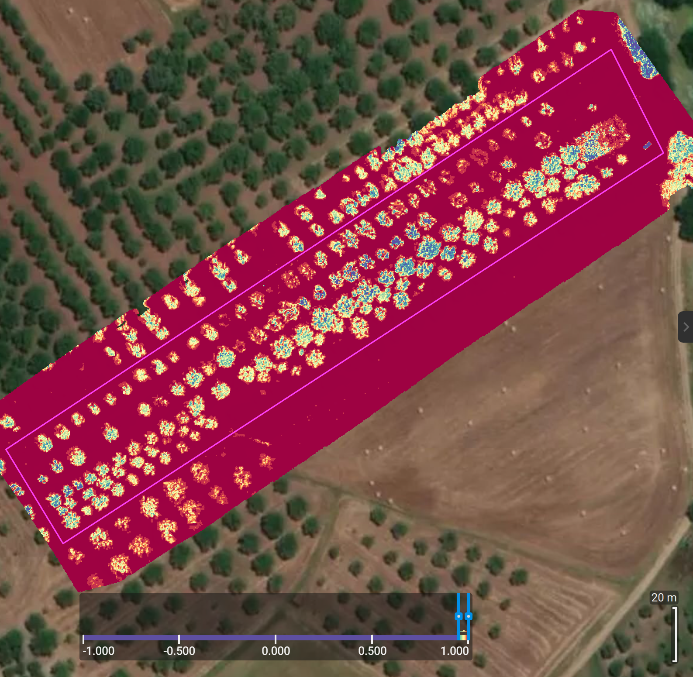

Benvenuti su Olivabot
Olivabot utilizza droni e tecnologia avanzata per supportare gli agricoltori nella gestione sostenibile degli uliveti.
Uliveto 1: Analisi e Gestione
In questo caso d'uso, abbiamo utilizzato i nostri droni per mappare l'uliveto, eseguire una ricostruzione 3D e condurre un'analisi multispettrale per fornire raccomandazioni precise agli agricoltori.
1. Mappa di Google Maps
La mappa iniziale dell'uliveto è stata ottenuta tramite Google Maps, offrendo una panoramica dell'area agricola. Tramite imagini satellitari, pianifichiamo una missione di volo per il drone, specifica in base alla conformità dell'oliveto.

2. Riprese dal Drone
Il drone ha catturato immagini dettagliate dell'uliveto, fornendo dati essenziali per la nostra analisi agricola.

3. Modello della Superficie
Il modello della superficie mostra le elevazioni del terreno, un elemento cruciale per la gestione dell'acqua piovana, specialmente durante le estati secche in cui gli uliveti non irrigati artificialmente soffrono maggiormente a causa della siccità e del calore. Grazie a questo modello, è possibile creare piccole depressioni naturali nel terreno che aiutano ad accumulare l'acqua piovana in base all'elevazione del suolo. Questo approccio non solo preserva l'acqua, ma può anche contribuire alla pianificazione del terreno per migliorare la distribuzione naturale dell'acqua e sostenere la crescita degli ulivi nelle aree più colpite dal cambiamento climatico.
3. Ricostruzione 3D
La mappatura 3D ha permesso una visualizzazione accurata della struttura dell'uliveto, facilitando le decisioni relative alla potatura e all'ottimizzazione della crescita degli alberi.

4. Analisi Multispettrale
L'analisi multispettrale ha individuato aree con potenziali problemi di salute degli alberi e ha fornito suggerimenti per l'uso mirato di fertilizzanti.
